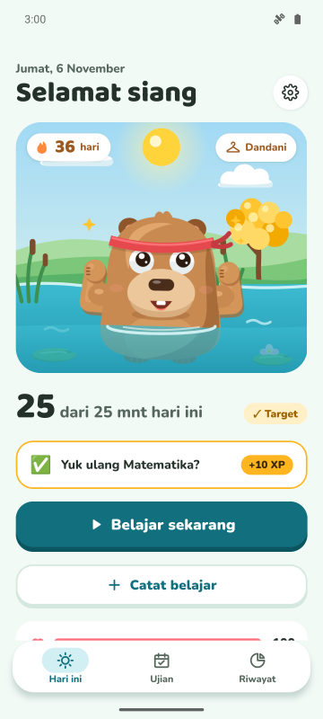
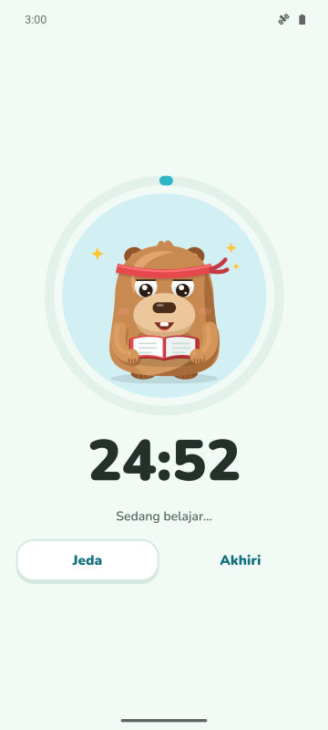
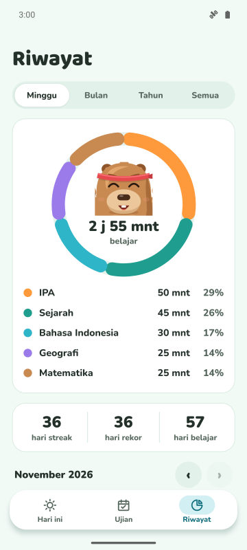
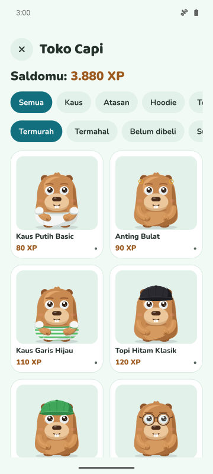

Target harian dan streak
Tentukan berapa menit belajar per hari. Target tercapai, streak naik dan kapibara merayakannya.
Timer fokus, streak harian, dan hitung mundur ujian. Makin rajin kamu belajar, makin senang dan kuat kapibaramu.
Segera hadir di Google Play
Gratis untuk Android. iPhone menyusul.

Tentukan berapa menit belajar per hari. Target tercapai, streak naik dan kapibara merayakannya.
Timer dengan tiga mode. Di Mode Terlindung, kapibara muncul di atas aplikasi yang ingin kamu hindari.
Tambahkan ujianmu dan lihat sisa harinya. Setiap hari ada misi dengan pelajaran yang paling butuh perhatian.
Kumpulkan XP dari belajar dan tukar dengan baju dan aksesori. Hari spesial dan ulang tahunmu juga dirayakan.



Ya. Aplikasinya gratis dengan iklan. Premium (opsional) menghapus iklan dan membuka Mode Terlindung, notifikasi senyap saat fokus, dan 3 pelindung streak setiap bulan.
Tidak. Datamu tersimpan di HP. Kalau mau, bisa disinkronkan ke Google Drive milikmu sendiri.
Bisa. Tambahkan tanggal ujian, pantau hitung mundurnya, dan dapatkan pengingat 7, 3, dan 1 hari sebelumnya.
Di Forest kamu menanam pohon. Di CapyFoco kamu merawat kapibara yang tumbuh seiring belajarmu, dengan streak harian, target, dan hitung mundur ujian dalam satu aplikasi.
Untuk sekarang hanya Android. Versi iPhone sedang direncanakan.